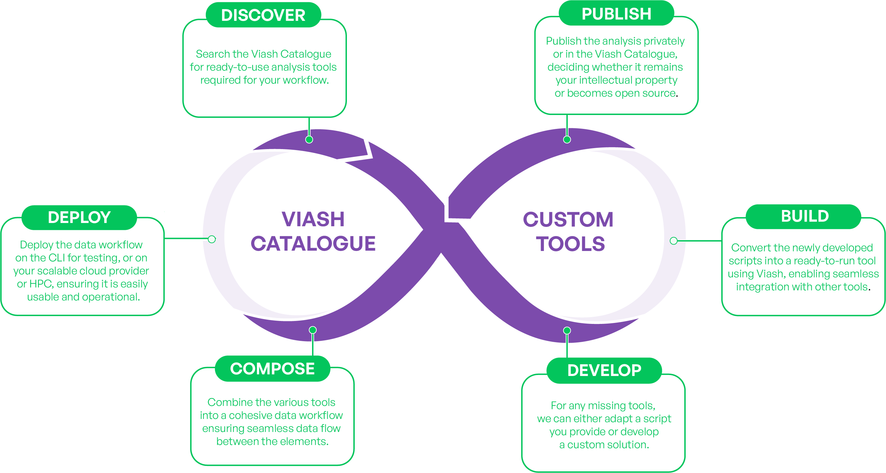

Approach
Modular Biotech Research, adaptable Data Workflow, Bioinformatics Innovation
Intuitive Data Workflow Approach
Our approach to data workflow development, powered by the Viash tool and Viash Hub platform, is built on years of experience in data workflow development and a deep understanding of our clients’ needs.
More than just developing a functional data workflows, the solution champions a flexible, long-term and future proof approach in data processing that is easily integratable into existing environments , moving away from traditional fixed and manually developed data workflow structures.
Continuous Improvement
that transforms your data analysis workflow approach to an efficient and organised process.



Search the Viash Catalogue for ready-to-use analysis tools required for your workflow.
For any missing tools, we can either adapt a script you provide or develop a custom solution.
Convert the newly developed scripts into a ready-to-run tool using Viash, enabling seamless integration with other tools.
Publish the new ready-to-run tools privately or in the Viash Catalogue, deciding whether it remains your intellectual property or becomes open source.
Combine the various tools into a cohesive biotech data
workflow, ensuring seamless data flow between the elements.
Deploy the data workflow on your scalable cloud provider or HPC, ensuring it is easily usable and operational.
Overcoming Key Industry Challenges
Our approach and technical implementations address key strategic and operational challenges in data workflow development.
Our Solutions to Key Strategic Challenges
Future Proofing
Automate and Optimise
Implement Modularity
Enable Collaboration
Manage Capabilities
Achieve Industry-Readiness
- * Available 2025
Our Solutions to Key Operational Challenges
Operations
Development
Usability and Accessibility
Risk-Mitigation
- * Available 2025
Download our whitepaper to see how our approach tackles your data analysis challenges!
Viash Ecosystem
Our Data Workflow Suite consists the Viash Tool, the Viash Hub platform and an extensive repository of biotech data workflows and tools: Viash Catalogue.
Viash Catalogue
The open-source catalogue on Viash Hub offers a comprehensive collection of publicly available biotech data workflows, modules, and useful tools , all ready for individual use or for composing into larger data workflows.
Viash Hub
Viash Hub Public is a platform for managing, developing, deploying, and sharing bioinformatics tools
and workflows.
It allows users to publish, share, and maintain versioned modules, ensuring accessibility and
reusability.
Optimised for cloud environments, it simplifies launching data workflows.
Available 2025
Viash
Viash is the tool developed by Data Intuitive to create, standardise, and manage data workflows. It automates the generation of modular, executable components, ensuring that workflows are reproducible, scalable, and easily integrated into various computational environments.
Engineered with deep expertise in pipelines and Nextflow, Viash minimizes manual coded boilerplate
coding and development errors, significantly boosting efficiency.